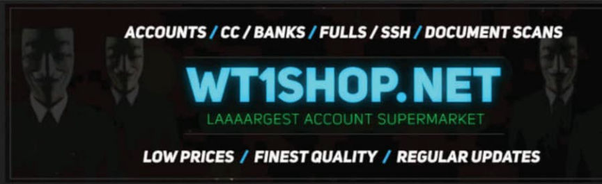
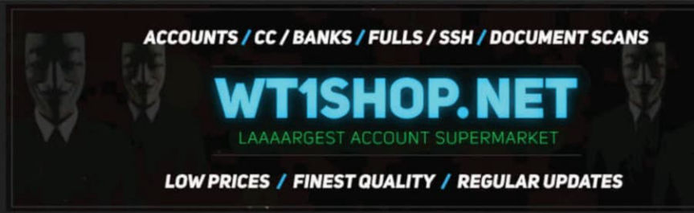

Justice Minister Demands EU-Wide Action Against Telegram
~2 min read | Published on 2021-12-22, tagged General-News, Telegram using 436 words.
Germany’s Minister of Justice, Marco Buschmann, has called for an EU-wide effort to regulate the content on Telegram.
Germany’s Federal Minister of Justice, Marco Buschmann, has called for an EU-wide effort to effectively censor Telegram users or ban the application altogether. Although he did not explicitly threaten a blanket ban, he said that compliance with his demands, in this proposal, would result in uninterrupted access to the European market. Telegram is headquartered in Dubai.
Buschmann said that an EU-wide effort would force Telegram to acknowledge government demands. “When dealing with the [Islamic State], it was possible in this way that the channels of the terrorist organization were simply turned off.”
“What is spread on Telegram is disgusting, indecent, and criminal,” he said last week in a Tagesthemen broadcast.
In February 2022, social media platforms will be required to report criminal or so-called “extremist” content to law enforcement. Messaging applications are exempt from this requirement. Telegram is considered a messaging application. Buschmann said there should not be a “blanket exemption for messengers” and wanted to eliminate this “loophole.”
The push to impose restrictive demands on Telegram is echoed by other government figures in Germany. Some, including Saxony’s Interior Minister Roland Wöller, have cited Telegram’s “unbelievable power of mobilization” and “anonymity” as reasons behind the push for new legislation. Others have pointed to the widespread use of Telegram by drug vendors and their customers. A Federal Criminal Police Office press release called Telegram an “alternative to trading platforms on the darknet.”

Many, if not most, government figures and government-aligned establishment fixtures involved in the fight against Telegram have referenced the “conspiracy theorists, criminals, and right-wing extremists” who use the platform.
To that end, Belarus is one step ahead of Germany when it comes to preventing these omnipresent extremists from using any social media platform or messaging service. Alyaksandr Lukashenka’s government has strict laws against extremist actions, including the act of subscribing to the largest Telegram channel in Belarus, the independent news outlet Nexta Live!, among many others. The Belarusian Association of Journalists claims that the government in Belarus is “using anti-extremism legislation to illegally restrict freedom of speech.” (Which is something nobody could have expected.) This seems like the logical conclusion of such legislation in any country, including Germany.
Eventually, the government will run out of things to slap with the extremist label.
I should add as a footnote that Germany seems very strong on encryption right now. It appeared in 2020 as if they were headed in an Australian direction (backdoors) and then reversed course. So they have that going for them I guess.
Germany’s Federal Minister of Justice, Marco Buschmann, has called for an EU-wide effort to effectively censor Telegram users or ban the application altogether. Although he did not explicitly threaten a blanket ban, he said that compliance with his demands, in this proposal, would result in uninterrupted access to the European market. Telegram is headquartered in Dubai.
Buschmann said that an EU-wide effort would force Telegram to acknowledge government demands. “When dealing with the [Islamic State], it was possible in this way that the channels of the terrorist organization were simply turned off.”
Germany's Federal Minister of Justice, Marco Buschmann.
“What is spread on Telegram is disgusting, indecent, and criminal,” he said last week in a Tagesthemen broadcast.
In February 2022, social media platforms will be required to report criminal or so-called “extremist” content to law enforcement. Messaging applications are exempt from this requirement. Telegram is considered a messaging application. Buschmann said there should not be a “blanket exemption for messengers” and wanted to eliminate this “loophole.”
The push to impose restrictive demands on Telegram is echoed by other government figures in Germany. Some, including Saxony’s Interior Minister Roland Wöller, have cited Telegram’s “unbelievable power of mobilization” and “anonymity” as reasons behind the push for new legislation. Others have pointed to the widespread use of Telegram by drug vendors and their customers. A Federal Criminal Police Office press release called Telegram an “alternative to trading platforms on the darknet.”

A Telegram bot selling LSD | Vice
Many, if not most, government figures and government-aligned establishment fixtures involved in the fight against Telegram have referenced the “conspiracy theorists, criminals, and right-wing extremists” who use the platform.
To that end, Belarus is one step ahead of Germany when it comes to preventing these omnipresent extremists from using any social media platform or messaging service. Alyaksandr Lukashenka’s government has strict laws against extremist actions, including the act of subscribing to the largest Telegram channel in Belarus, the independent news outlet Nexta Live!, among many others. The Belarusian Association of Journalists claims that the government in Belarus is “using anti-extremism legislation to illegally restrict freedom of speech.” (Which is something nobody could have expected.) This seems like the logical conclusion of such legislation in any country, including Germany.
Eventually, the government will run out of things to slap with the extremist label.
I should add as a footnote that Germany seems very strong on encryption right now. It appeared in 2020 as if they were headed in an Australian direction (backdoors) and then reversed course. So they have that going for them I guess.